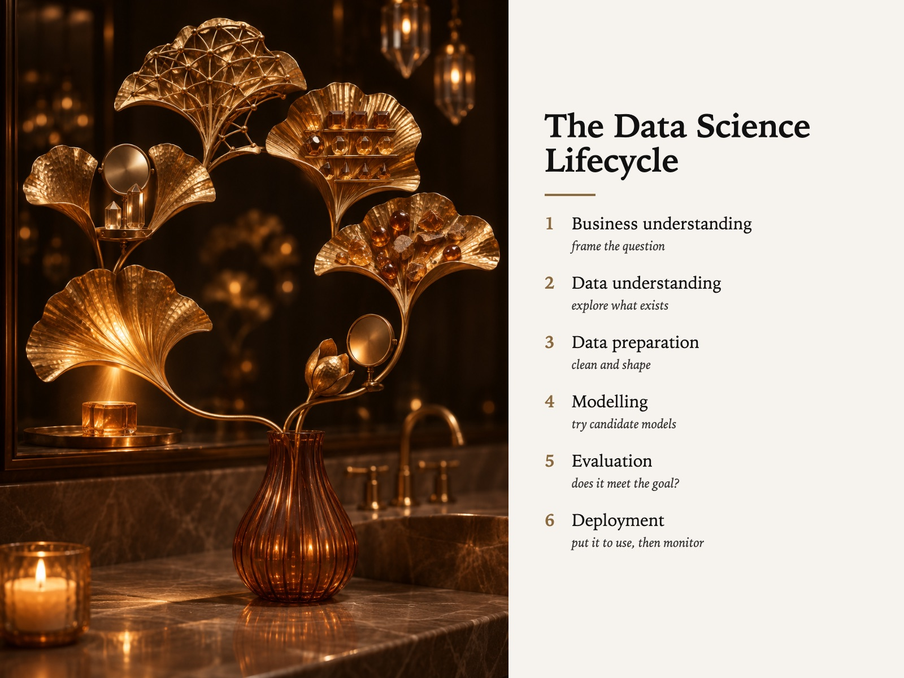

Style Vault / Creative / Gilded Ginkgo Hour
Gilded Ginkgo Hour
SV-045

Example: The data science lifecycle, set in Gilded Ginkgo Hour
In plain words
A sculpted metal leaf, like a gilded ginkgo, standing in a fluted glass vase on stone in a dark, hushed luxury bathroom, lit only by candle and small distant points of light. Everything is one warm family of bronze, gold and amber. The style is the hard metal plant being treated as the only living thing in the room. Best for: premium brand positioning; lasting value of craft; personal-brand mood pieces; culture of quality. Avoid: text or lettering generated inside the image.
Topics it fits
- Premium brand positioningthe quiet, mostly dark opulence signals expensive restraint for a high-end service or offer
- Lasting value of crafta metal replica outliving the real plant tells a story about work built to endure
- Personal-brand mood piecesone warm palette and a single gleaming object give a calm, luxurious signature image
- Culture of qualitythe light picking out every hammered rib makes care and finish the visible subject
Art style and layout
- core locked [metal_botanical_hero, points_of_light_only, one_warm_family_no_cool, layered_bokeh_interior, stone_ground]
- the tension a dead-metal replica out-living the plant. The ginkgo is the softest possible subject rendered in the hardest possible material, and the light treats it as the only living thing in the room. Swap in a real plant and the frame collapses into hotel marketing
- metal botanical hero SIGNATURE. The object must read as crafted metal - ribs, hammer marks, seams. If it comes back as a golden-toned real leaf, the card failed; say
sculptural,hammered,ribbed metal - points of light only every light source is small, warm and visible in frame (candle flame, pendant filaments). No ambient wash - if the walls are legible, the exposure is wrong
- one warm family no cool bronze → gold → amber → umber, nothing else. A single cool reflection turns it into a showroom
- layered bokeh interior at least two out-of-focus depth layers (foreground counter edge or candle, background mirror/pendants). The sharpness budget is spent entirely on the metal leaves
- palette [near-black umber "#1B1512, smoked taupe marble "#8F7F6F, brushed bronze "#8C6A45, antique gold "#C9A063, amber glass "#6E3E1F, candle glow "#EFB97C]
- era reference grand-hotel Art Deco metalwork, Japanese ikebana staging, contemporary luxury-spa photography. Do not name a living artist
What must stay, what may change
subject - one fixed vanity scene, the gilded botanical swapped ten far-apart ways (ginkgo, lotus pod, fern frond, coral fan, wheat sheaf, palm, seed head, feather, mushroom gills, magnolia). The metal object is the hero; everything else is set dressing
As JSON
Paste this into a prompt or a skill to reuse the style.
{
"id": "SV-045",
"name": "Gilded Ginkgo Hour",
"audience": [
"creative"
],
"category": [
"photography",
"craft-material"
],
"format": [
"poster",
"card",
"style-study"
],
"maker": "diffusion",
"keep_and_swap": "subject - one fixed vanity scene, the gilded botanical swapped ten far-apart ways (ginkgo, lotus pod, fern frond, coral fan, wheat sheaf, palm, seed head, feather, mushroom gills, magnolia). The metal object is the hero; everything else is set dressing",
"style_dna": {
"core_locked": "[metal_botanical_hero, points_of_light_only, one_warm_family_no_cool, layered_bokeh_interior, stone_ground]",
"the_tension": "**a dead-metal replica out-living the plant.** The ginkgo is the softest possible subject rendered in the hardest possible material, and the light treats it as the only living thing in the room. Swap in a real plant and the frame collapses into hotel marketing",
"metal_botanical_hero": "SIGNATURE. The object must read as crafted metal - ribs, hammer marks, seams. If it comes back as a golden-toned real leaf, the card failed; say `sculptural`, `hammered`, `ribbed metal`",
"points_of_light_only": "every light source is small, warm and visible in frame (candle flame, pendant filaments). No ambient wash - if the walls are legible, the exposure is wrong",
"one_warm_family_no_cool": "bronze → gold → amber → umber, nothing else. A single cool reflection turns it into a showroom",
"layered_bokeh_interior": "at least two out-of-focus depth layers (foreground counter edge or candle, background mirror/pendants). The sharpness budget is spent entirely on the metal leaves",
"palette": "[near-black umber \"#1B1512, smoked taupe marble \"#8F7F6F, brushed bronze \"#8C6A45, antique gold \"#C9A063, amber glass \"#6E3E1F, candle glow \"#EFB97C]",
"era_reference": "grand-hotel Art Deco metalwork, Japanese ikebana staging, contemporary luxury-spa photography. **Do not name a living artist**"
},
"elements": {
"subject": "**one gilded metallic botanical** - ribbed, veined, visibly metal, never a real plant - in a fluted glass vessel, staged on stone like jewellery on a counter",
"composition": "hero object right-of-centre at the focal plane; everything else (pendants, mirror world, taps, candle) is layered bokeh in front of and behind it. The frame is an interior but reads as a still life",
"light": "**points, not washes** - a candle at counter level, pendants far up in the dark, and the leaves themselves acting as reflectors. The brightest surfaces in the frame are the metal ribs. No daylight, no ceiling fill",
"palette": "near-black umber ground, smoked taupe stone, brushed bronze, antique gold, amber glass. One warm family end to end - **no cool accent anywhere**, the dark itself is the contrast",
"material/texture": "honed marble with heavy veining, hammered/ribbed gilt metal, fluted glass, faceted crystal. Every material is chosen for how it holds a highlight",
"mood": "quiet opulence, five-star hush - a room that is expensive precisely because it is mostly dark and nothing in it is trying",
"camera/render": "photographic, shallow DOF (f/2-ish), eye-level with the countertop, mirror used to double the scene as pure blur"
},
"palette_hex": [
"#1b1512",
"#8f7f6f",
"#8c6a45",
"#c9a063",
"#6e3e1f",
"#efb97c"
],
"topics": [
{
"topic": "Premium brand positioning",
"why": "the quiet, mostly dark opulence signals expensive restraint for a high-end service or offer"
},
{
"topic": "Lasting value of craft",
"why": "a metal replica outliving the real plant tells a story about work built to endure"
},
{
"topic": "Personal-brand mood pieces",
"why": "one warm palette and a single gleaming object give a calm, luxurious signature image"
},
{
"topic": "Culture of quality",
"why": "the light picking out every hammered rib makes care and finish the visible subject"
}
]
}